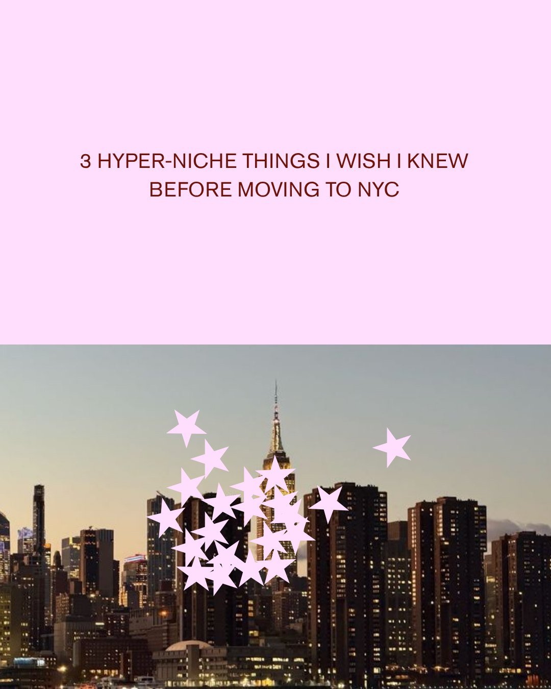
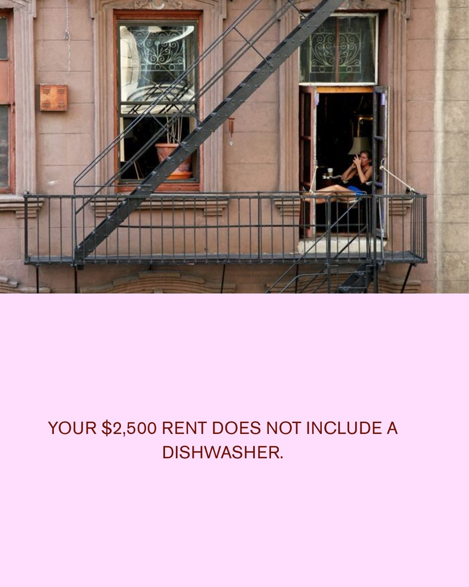
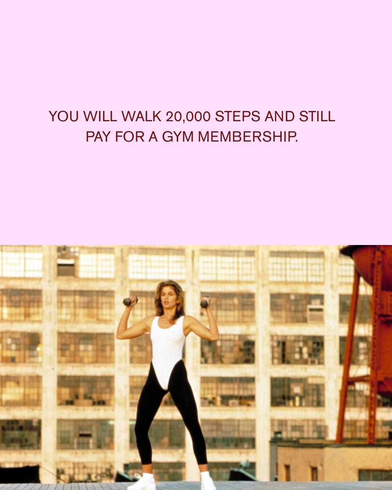
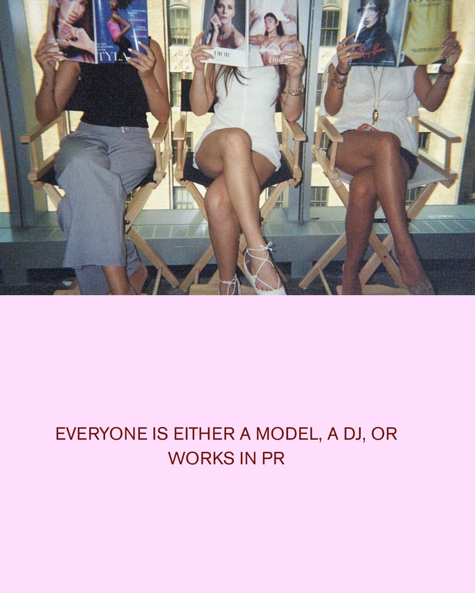
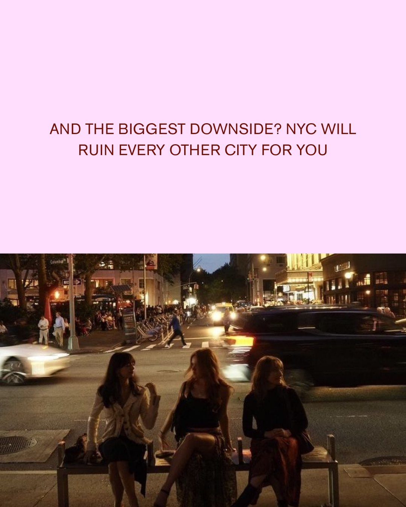

Instagram carousel · For the Girls
Fashion Hills I Will Die On
“Drop your most controversial fashion take in the comments. We promise not to judge. (Probably.)”
Where Vivrelle is today, sample pillar ideas to brainstorm content, the research on why they’ll hit and sample pieces.
A creator on green screen styling a character or celebrity: “How we’d style Lily Bloom” (4.4M), F1 Miami (2M), the Olsen twins’ bag collection (1.6M), Mean Girls, Carrie Bradshaw, Aspen style.
“POV: one intern is a New Yorker and the other is a NEW Yorker” (3.3M, now a 10-part playlist), Anna Wintour steps down (1.4M), modern-day Carrie Bradshaw (1.1M), how members work out (999.5K).
“When the outfits are chef’s kiss” (2.7M), “and then Dior actually gifted her this bag” as a photo carousel (2.3M), Karl-Anthony Towns sneaking Jordyn’s lucky bag into a Knicks game (1.1M).
A creator in the showroom (1.9M), a member trying on bags (913.2K), “Any bag that’s on your wish list?” (688.9K), Member Picks (46 posts).
“Want bags for $39/month? Keep watching!” (787.7K). The pinned questions explainer sits at 94K.
A starting point to brainstorm content ideas together, built around what Vivrelle already does well.
Specific occasions, and the outfit and bag for each.
Made to be saved for later and sent to a friend with the same plans.
Money tips that make borrowing the smart move.
Saving, cost-per-wear and buy, borrow or skip, with Vivrelle as the answer.
The post she sends to the group chat.
NYC in-jokes, POVs, takeovers and identity carousels.
The founder, the team and the process behind the closet.
Behind-the-scenes, long-form and series content that brings people back.
Every idea names a real moment, so the viewer knows exactly when she’d carry the bag.
A character or celebrity of the moment as a styling lesson on green screen, with bags from the closet. Vivrelle’s biggest format: “How we’d style Lily Bloom” has 4.4M views.
Three guests, three looks: impressing the in-laws, keeping it chill, and impressing his super cool sister who has amazing taste (she knows ball). One look per slide, with the bag in every frame.
A talking head on green screen over outfit photos for Blackout Wednesday at the hometown bar: chic but not too flashy, and the bag that survives a crowded room.
One bar or restaurant per episode, named in the caption so it shows up in search: the outfit, the bag and the vibe of the room.
Packing for the weekend: après-ski by day, the festival by night, and one bag that works for both.
Part 1, Part 2, Part 3 on TikTok’s series format: one winter problem per episode, like the coat that hides your bag or the party bag that works with snow boots.
Same night, different rooms: the local dive bar vs a club in NYC. What you’d wear to each, and which bag makes it to midnight.
Money content Gen Z already saves and searches for, with borrowing as the smart move.
A chatty talking head and a saveable carousel. Number five: borrowing the party bag instead of buying it.
De-influencing told straight to camera: the “it bag” I’d wear twice a year makes the list, and borrowing is what replaced it.
Three pieces, a verdict for each, with the price on screen. People argue in the comments, which is the point.
A checklist carousel people save. The last slide: “Can I borrow it first?”
Price ÷ times worn, worked out on screen with green screen for a bag you’d only wear a few times a year.
Funny, relatable content made to be sent, so it reaches girls who don’t follow Vivrelle yet. Every punchline ends on the bag.
One bold opinion per slide, like “Being well-dressed has nothing to do with how much you spend” and “You can love fashion and still be an outfit repeater.” It ends by asking for your most controversial fashion take in the comments. See my sample.
A text-on-screen POV over a group dinner: everyone goes quiet, and the punchline lands on the one thing in her life that rotates more often than her lease.
Quick cuts of hyper-specific NYC moments, like the bodega cat or the 6 train in heels, ending on the bag.
One bag per neighborhood: the West Village, SoHo, the Upper East Side, Williamsburg, the Lower East Side. Swipe to find yours, then fight about it in the comments.
A different creator runs the account for a day, with people like Halley Kate, Bran Flakes, Acquired Style and Victoria Paris. Each one picks her bags at the showroom and shares it with her own audience too.
A text-on-screen POV: mid-robbery, she’s still scrolling the new holiday drop, then shows the bags that just landed in the closet.
The NYC intern bar starter pack: what every intern carries, and what she should be carrying.
The first episode of a “How to” guide series: the coat, the lip and the bag that make you feel put together when it’s dark at 4:30.
A rent-free apartment, a seat on the L train and the one thing on the list she can actually get: the bag.
Rules for not overspending, told as a funny survival guide, ending on borrowing instead of buying.
Behind the scenes with the founder, the team and the process, in long-form and series content that gives people a reason to come back.
Rapid-fire questions for founder Blake, one theme per episode: fashion (what would you wear meeting your boyfriend’s parents for the first time?), work (an iced coffee to an interview?), pop culture (swap closets with one celebrity), relationships (would you tell your friend you hated her boyfriend?) and controversial takes (leaving a party without saying goodbye).
A timestamped day: morning arrivals, member pickups and the bag everyone is waiting on.
Satisfying, sound-on packing: inspecting, cleaning and boxing a bag for its next member. It answers “is it clean?” before anyone asks.
The team on what earns a bag a spot in the closet, told straight to camera.
Film the group the moment a new bag comes out of the box.
How Blake started Vivrelle in 2018, told in a longer sit-down video and cut into short clips.
One way the sample pillar ideas could fill a month.
Tags show each post’s pillar: Wear it, Smart girl, The girls, Inside. Recurring series run as episodes through the month.
What the research says about value-based content, TikTok and Instagram.
of social users say edutainment, content that educates and entertains, is the most engaging kind of brand content.
Styling tips and the Smart Girl’s Luxury.
Sprout Social Content Strategy Report, 2024of resale shoppers name affordability as a top reason they buy secondhand, and 45% of the handbags Gen Z resale shoppers own are secondhand.
Money tips that make borrowing the smart move.
BCG × Vestiaire Collective, Oct 2025average views for TikToks that open with a hot take, a bold, opinionated first sentence, against about 7K for story-style hooks.
Hot takes, and “What Would Blake Do?” controversial takes.
The Content Labs, 3,997 TikToks and Reels, Jun 2025–Apr 2026more watch time, and 43.2% more reach, for TikToks over one minute than for 30–60 second videos.
Longer, chatty Where I’d Wear It stories.
Buffer, 1.1M TikToks, Mar 2025median engagement rate for Instagram carousels, more than double the 3.3% for Reels.
Carousels like “Which bag is your personality?”
Buffer, Mar 2026views on Vivrelle’s “How we’d style Lily Bloom,” and 787.7K on “Want bags for $39/month? Keep watching!”
Styling and money value already win on Vivrelle’s own account.
@vivrelle on TikTok, most popular, Nov 2026Vogue Business reports that brands are shifting back to long-form video to build loyalty with young audiences.
Viewership multiplied by duration is what really matters.
A quick view doesn’t turn into a relationship. Time spent watching does.
And real influence. The audiences that stay longest are the ones that buy.
Instagram just started testing videos up to 90 minutes, linked from Reels, in October 2026.
Designed in Canva and edited by me.
“Drop your most controversial fashion take in the comments. We promise not to judge. (Probably.)”





Five slides. Swipe or use the arrows.
oliviawest543@gmail.com · TikTok @oliviawest111